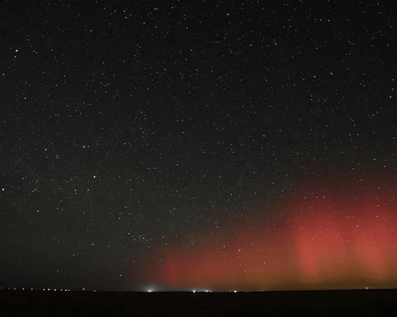
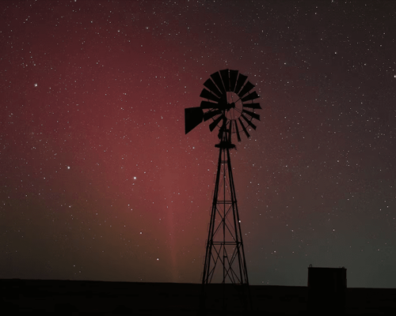
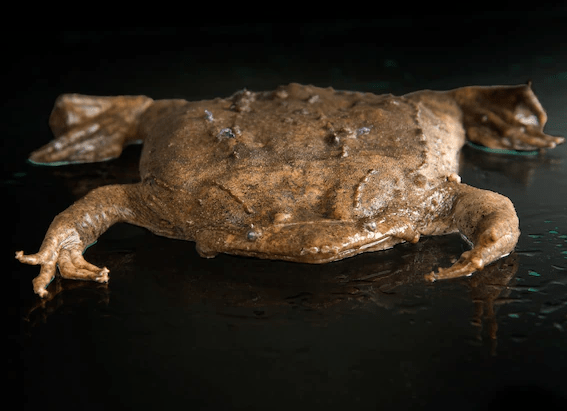

NATIONAL GEOGRAPHIC
2024 may bring the best auroras in 20 years
SCIENCE
- 
- 
Three decades had passed since Texas photographer Wesley Luginbyhl saw the northern lights in his home state. Then, in spring this year, he photographed them twice.
A particularly intense solar storm eruptions that propel electrically charged particles at high speeds away from the sun caused aurora borealis to be seen at latitudes much farther south than usual, with sightings in Virginia, Arizona, and southern Spain.
Luginbyhl says he never expected to pick up more than a faint red glow on the horizon in photos during April’s event, but as he drove north from Amarillo to Texahoma, “the entire northern horizon had a glow to it.” He captured incredibly bright colors blue, pink, red and green–of the aurora, which he said was practically overhead.
In 2024, experts say we may see even more auroras in regions they’re not normally spotted. That’s because the sun is reaching the peak (called the “solar maximum”) of its roughly 11-year cycle, in which solar activity will be greatest. But this maximum has even more excitement around it than usual because the last one in 2014 was the weakest in a century, says Mark Miesch, a research scientist at NOAA’s Space Weather Prediction Center in Boulder, Colorado.
Does that mean 2024 will see the best auroras in 20 years? Here’s what you need to know.
How to see the northern lights during the solar maximum
The northern lights appear in a region around the earth’s magnetic pole, called the “auroral oval” or “auroral zone”, explains Don Hampton, research associate professor at the Geophysical Institute of the University of Alaska Fairbanks. But that region shifts and fluctuates all the time, depending on the strength of solar wind, a stream of charged particles from the sun’s atmosphere that can be strengthened by storms. During the solar maximum, experts expect that episodes when the auroral zone grows and is more active will happen more frequently.
“When there’s more energy, [the auroral zone] gets thicker and expands further south,” says Hampton. “I don’t think it is too wild a prediction to say that people in the midwest and maybe even lower midwest (40th parallel) will have a good chance to see aurora once or twice during this solar cycle, but there are no guarantees,” he says. In the U.S., the 40th parallel runs through Provo, Utah; Boulder, Colorado; north Indianapolis; and Columbus, Ohio.
Aurora forecasting apps like NOAA’s Space Weather Prediction Center, Aurora Alerts, and My Aurora Forecast & Alerts can help chasers predict when it will be best to see the northern lights as well as how far south the auroral oval will extend after solar activity. On average, auroras are more frequent around the March and October equinoxes, says Magnus Wik, a space weather scientist at the Swedish Institute of Space Physics.
There’s more to consider when it comes to timing and location cloudy or light polluted skies will make aurora spotting difficult or impossible.
To escape manmade light pollution, consider searching DarkSky.org for certified international dark sky places around the world.
The direction you look matters, too, depending on your location related to the auroral oval. “In Alaska, if we get a big solar storm, we look overhead or south,” Hampton said. “In the Midwest, find a field and look north and see what you can see.”
Not all aurora viewing is created equal, cautions Miesch.
“On the rare occasions when you can see it well in the contiguous U.S., it is usually a faint red glow on the horizon—nowhere near as dramatic as in pictures and movies,” he says.
Comments :
- john Very good
- john Very good
Leave a Reply
Your email address will not be published. Required fields are marked*
Related posts:
-
Ancient wolves that played with humans likely evolved into today's friendly dogs
Most pups love to play, whether it’s chasing balls, engaging in a game of tug-of-war, or tearing that squeaky toy to smithereens. For humans, playing with a dog usually lifts our spirits; in fact, science shows that dog owners laugh
View article -
Are you a cat whisperer A few special people can read feline expressions.
Whenever the cat sitter texts Georgia Mason and her husband photos of Sylvie and Luke, their two brown tabbies, “we usually agree if our cats are looking cheerful or grumpy or anxious,” she says.
View article -
Surinam toad
With its flat, flounder-like appearance, triangle-shaped head, and tiny eyes, the Surinam toad doesn’t look like most other toads. It also doesn’t give birth like one.
View article